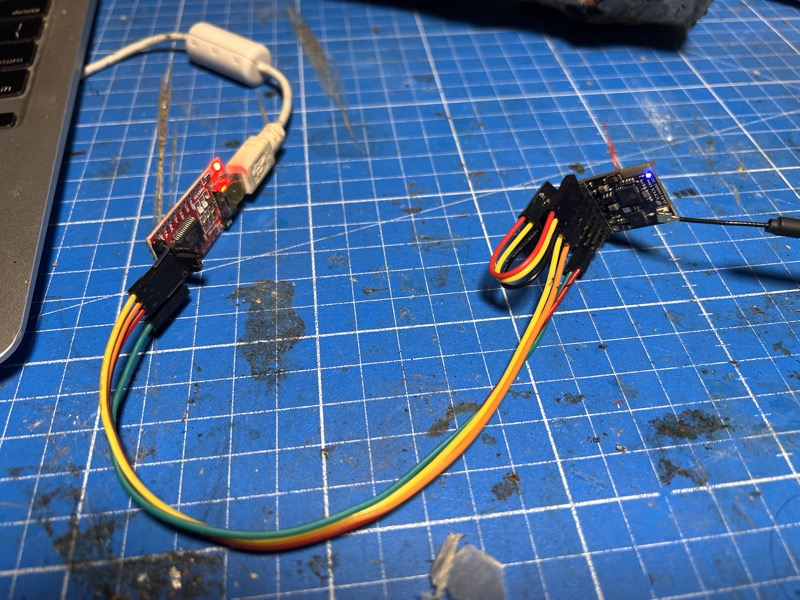

Hardware reference for the Generic 2400 PWMP7 (DIY2400RX_PWMPEX) ESP8285 receiver running PteronautOS with Zephyrus MPU6050 gyro stabilization.
⚠️ PCB revision matters. This guide covers v1.0 boards (GPIO2/GPIO5 exposed). For v1.1 boards where GPIO2/GPIO5 are not broken out, see HARDWARE.md — the v1.1 uses CH2/CH3 (GPIO1/GPIO3) for I²C.
The PWM7 is a DIY ESP8285-based ExpressLRS receiver using the SX1280 2.4GHz radio. It provides 7 PWM outputs on a compact PCB, making it the recommended base hardware for servo-driven ornithopters running PteronautOS.
This guide covers pin mapping, I2C gyro integration, build configuration, and cross-flash procedure from stock ELRS 3.x firmware.
| Property | Value |
|---|---|
| MCU | ESP8285 @ 80MHz, 1MB Flash |
| Radio | SX1280 (2.4GHz) |
| PWM Outputs | 7 native → 5 usable with Zephyrus gyro |
| PteronautOS Target | PteronautOS_ESP8285_2400_RX |
| Legacy ELRS Target | DIY_2400_RX_PWMPEX |
| Hardware JSON | src/hardware/RX/Generic 2400 PWMP7.json |
| First Install | ⚠️ UART only — Wi-Fi blocked (see §6) |
| GPIO | PWMP7 Function | PteronautOS Role | Conflict? |
|---|---|---|---|
| 0 | PWM Ch1 + Button | PWM Ch1 + Button | ✅ Shared OK |
| 1 | PWM Ch2 + UART TX | PWM Ch2 + Serial TX | ✅ Shared OK |
| 2 | I2C SCL (MPU6050) | ⚡ Repurposed | |
| 3 | PWM Ch3 + UART RX | PWM Ch3 + Serial RX | ✅ Shared OK |
| 4 | SX1280 DIO1 (IRQ) | SX1280 DIO1 | 🔒 Hard-reserved (radio) |
| 5 | I2C SDA (MPU6050) | ⚡ Repurposed | |
| 9 | PWM Ch4 | PWM Ch4 | ✅ Free |
| 10 | PWM Ch5 | PWM Ch5 | ✅ Free |
| 12 | SPI MISO | SPI MISO | 🔒 Radio bus |
| 13 | SPI MOSI | SPI MOSI | 🔒 Radio bus |
| 14 | SPI SCK | SPI SCK | 🔒 Radio bus |
| 15 | SPI NSS | SPI NSS | 🔒 Radio bus |
| 16 | LED (free, non-PWM) | ✅ Reclaimed | |
| 17 | VBAT ADC | VBAT ADC | ✅ Free |
The PWMP7 has no dedicated I2C header. This guide covers the v1.0 resolution (GPIO2/GPIO5 repurposed from PWM). For v1.1 boards where GPIO2/GPIO5 are not exposed, see HARDWARE.md.
The default Zephyrus I2C pins (GPIO4=SDA, GPIO5=SCL) conflict directly with: The PWMP7 has no dedicated I2C header. The default Zephyrus I2C pins (GPIO4=SDA, GPIO5=SCL) conflict directly with:
| Signal | GPIO | Original Function | Status |
|---|---|---|---|
| I2C SDA | GPIO 5 | PWM Ch6 | Repurposed (PWM lost) |
| I2C SCL | GPIO 2 | PWM Ch7 | Repurposed (PWM lost) |
Why not GPIO16? The ESP8266 software I2C library writes directly to GPIO registers that only address GPIO0–15. GPIO16 lives on the RTC register domain and cannot be toggled for I2C —
Wire.begin(5, 16)silently hangs the bus, triggering a watchdog reset boot loop.
Cost: 7 → 5 PWM outputs, LED reclaimed on GPIO16 (digital on/off only — no hardware PWM timer for GPIO16). The 3-servo ornithopter still has 2 spare channels.
GY-521 PWMP7 Receiver
------ --------------
VCC ───────── 3.3V
GND ───────── GND
SDA ───────── GPIO 5 (PWM Ch6 pad)
SCL ───────── GPIO 2 (PWM Ch7 pad)
⚠️ GPIO2 boot constraint: GPIO2 must be HIGH during ESP8266 boot. The I2C pull-up resistor (4.7k to 3.3V) satisfies this automatically — but ensure the MPU6050 does not actively pull GPIO2 low at power-up. If boot fails, temporarily disconnect SCL, power up, then reconnect.
⚠️ Verify your PCB: The GPIO 2 and GPIO 5 pads must be physically accessible on your specific PWMP7 board. Most layouts expose all PWM channel pads.
The firmware probes GPIO2 (SCL) before initializing I2C. If the MPU6050 is physically disconnected, its 4.7kΩ pull-up is absent — the pin reads LOW and Zephyrus skips I2C entirely, avoiding the boot-loop hang. The receiver boots normally with Zephyrus in enabled=false state.
This means you can flash first, wire the MPU later. When you connect the MPU, its pull-up registers on the next boot, I2C initializes, and gyro stabilization activates automatically. No firmware rebuild needed.
After I2C pin reassignment, 5 PWM outputs remain:
| Logical Channel | GPIO | Original | Usage |
|---|---|---|---|
| Ch1 | 0 | PWM1 | Left wing servo |
| Ch2 | 1 | PWM2 | Right wing servo |
| Ch3 | 3 | PWM3 | Crest rudder servo |
| Ch4 | 9 | PWM4 | Aux / spare |
| Ch5 | 10 | PWM5 | Aux / spare |
With 3 servos for the ornithopter (L-wing, R-wing, crest rudder), there are still 2 spare PWM channels. The LED on GPIO16 is reclaimed for status indication (digital on/off only — no hardware PWM available on RTC-domain GPIO16).
[env_common_pteronautos_rx]
extends = env_common_8285rx, radio_SX128X
build_flags =
-D ORNITHOPTER_MODE=1
-D PTERONAUTOS=1
-D ZEPHYRUS_ENABLED=1
-D ZEPHYR_I2C_SDA=5
-D ZEPHYR_I2C_SCL=2
-include target/Unified_ESP_RX.h
-Ilib/Ornithopter
-Ilib/Zephyrus
The -D ZEPHYR_I2C_SDA=5 and -D ZEPHYR_I2C_SCL=2 flags override the default I2C pins (GPIO4/5) defined in ZephyrusConfig.h. The #ifndef guards in that header ensure these build-time overrides take precedence. GPIO16 cannot be used for I2C on ESP8266 — it's on the RTC register domain and the software I2C library can't toggle it.
cd src
pio run -e PteronautOS_ESP8285_2400_RX
Build stats (as of latest):
| Resource | Usage | Limit | % |
|---|---|---|---|
| RAM | 50,864 bytes | 81,920 bytes | 62.1% |
| Flash | 553,352 bytes | 991,216 bytes | 55.8% |
Wi-Fi first-install from factory ExpressLRS 3.x will fail with ERROR[4]: Not Enough Space. This is a fundamental ESP8266 limitation, not a bug:
Updater class requires both old and new firmware to coexist in flash during the updateAfter the initial UART flash, all subsequent updates work via Wi-Fi — PteronautOS-to-PteronautOS fits within the partition.
⚠️ CRITICAL: Full chip erase required on first install. The factory ELRS 3.2.0 hardware.json survives in the LittleFS partition (0xF3000–0xFB000) when you only write firmware.bin. The ghost config defines "led": 16 and old PWM assignments that conflict with PteronautOS. Always erase first:
esptool.py --chip esp8266 --port /dev/cu.usbserial-XXXX --baud 460800 erase_flash
Then write the new firmware:
bash
esptool.py --chip esp8266 --port /dev/cu.usbserial-XXXX --baud 460800 \
write_flash 0x0 .pio/build/PteronautOS_ESP8285_2400_RX/firmware.bin
ℹ️ After erase, the hardware config starts blank. You must upload a hardware.json via the web UI at
http://10.0.0.1/hardware.htmlto enable PWM outputs. See §8 for the stock PWMP7 hardware JSON.
What you need: - USB-to-UART adapter with 3.3V logic (CP2102, CH340G, FT232, etc.) - Do not use 5V adapters — ESP8285 GPIO is not 5V-tolerant
Wiring:
USB-UART PWMP7 Receiver
-------- --------------
TX ───────── RX (GPIO3)
RX ───────── TX (GPIO1)
GND ───────── GND
3.3V ← power separately

⚠️ Power the receiver from its own 5V supply
Enter bootloader mode: 1. Hold the button (GPIO0 to GND) 2. Power on the receiver 3. Release the button after 1–2 seconds 4. The LED may glow dimly or stay off — this is normal
Flash with PlatformIO (includes auto-erase):
cd src
pio run -e PteronautOS_ESP8285_2400_RX -t upload --upload-port /dev/cu.usbserial-XXXX
Port examples by OS:
| OS | Port Pattern |
|---|---|
| macOS | /dev/cu.usbserial-* or /dev/cu.SLAB_USBtoUART |
| Linux | /dev/ttyUSB0 |
| Windows | COM3 (check Device Manager → Ports) |
💡 Save your firmware.bin to a safe location before cleaning the build directory — PlatformIO's
pio run -t cleanwill delete it.
Once PteronautOS is installed via UART, Wi-Fi updates work normally:
ExpressLRS RX WiFi network (password: expresslrs)http://10.0.0.1firmware.bin from .pio/build/PteronautOS_ESP8285_2400_RX/✅ Verified working on the PWMP7. All PteronautOS-to-PteronautOS updates succeed via Wi-Fi.
If the receiver currently runs ExpressLRS (DIY2400RXPWMPEX), flashing PteronautOS will trigger an EEPROM reset due to `flashdiscriminator` mismatch. All configuration will reset to defaults — this is correct and expected behavior.
Remember: cross-flash must be done via UART. Wi-Fi cross-flash from ELRS 3.x → PteronautOS fails with ERROR[4]: Not Enough Space due to flash partition constraints described above.
After flashing, connect to the receiver's WiFi AP and navigate to http://10.0.0.1. The web UI retains full ELRS compatibility:
Serial SDA / Serial SCL respectively — Zephyrus I2C pins are automatically excluded from PWM, leaving 5 usable outputs| Signal | GPIO | Notes |
|---|---|---|
| NSS | 15 | SPI chip select |
| SCK | 14 | SPI clock |
| MOSI | 13 | SPI data out |
| MISO | 12 | SPI data in |
| BUSY/DIO1 | 4 | Hard-reserved — do not repurpose |
| RST | — | Shared with ESP8285 reset |
The SX1280 DIO1 (GPIO4) is used for TXDONE/RXDONE interrupts — essential for packet timing. It is not available for any other function.
| Function | GPIO | Status with Zephyrus |
|---|---|---|
| LED | 16 | ✅ Reclaimed (digital on/off only) |
| Button | 0 | ✅ Functional (shared with PWM Ch1) |
The LED on GPIO16 is now available for status indication. However, GPIO16 on ESP8266 can only be used as a simple digital output — no hardware PWM and no internal pull-up. The LED will work for the standard ExpressLRS blink patterns (link status, WiFi mode, binding).
| Parameter | Value |
|---|---|
| ADC Pin | GPIO 17 (TOUT) |
| Scale | 310 |
| Offset | 12 |
| Calibration Range | 3.5V – 25.2V |
VBAT monitoring is retained from the stock ELRS configuration. The analog divider network on the PWMP7 PCB remains unchanged.
PteronautOS implements three layers of I2C pin protection:
| Layer | Mechanism | Location |
|---|---|---|
| Compile-time | #ifndef guards on I2C pin defines |
ZephyrusConfig.h |
| PWM init | Hardware exclusion of I2C pins from PWM | devServoOutput.cpp |
| Config defaults | I2C pins default to somSCL/somSDA mode |
config.cpp |
These guards ensure that even if the web UI configuration is accidentally changed, the I2C pins will never be driven as PWM outputs — preventing electrical contention with the MPU6050.
| Condition | Servo Response |
|---|---|
| Link lost | All PWM channels center to 1500µs |
| MPU6050 failure | Zephyrus disengages — rudder stays neutral |
| I2C bus hang | Timeout + decay — Zephyrus self-deactivates |
| EEPROM corruption | Defaults loaded — safe centering |
All failsafe paths respect the hermetic principle: the wings center, the rudder centers, the craft glides.
| Issue | Impact | Mitigation |
|---|---|---|
| GPIO2 boot constraint | SCL must be HIGH during ESP8266 boot | I2C pull-up (4.7k→3.3V) handles this; if boot fails, disconnect SCL temporarily |
| GPIO 2 & 5 must be accessible | Some PCB revisions may not expose pads | Verify before soldering; most PWMP7 boards break out all PWM channels |
| No I2C pull-up resistors | May need external 4.7kΩ pull-ups on SDA/SCL | Add to GY-521 breakout or solder directly |
| LED on GPIO16 = digital only | No PWM dimming, no internal pull-up | Standard ELRS blink patterns work; just no brightness control |
| 62% RAM usage | Limited headroom for future features | Stay within hermetic 65% limit |
| Single UART | Cannot use both serial RX and debug simultaneously | Disable debug for PWM3 serial use |
| Wi-Fi first-install blocked | ERROR[4]: Not Enough Space when cross-flashing from ELRS 3.x via Wi-Fi |
Use UART for first install; all subsequent updates via Wi-Fi work |
| Full chip erase required | Factory hardware.json survives write_flash if not erased first |
Always erase_flash before first PteronautOS install |
{
"radio_dio1": 4,
"radio_miso": 12,
"radio_mosi": 13,
"radio_nss": 15,
"radio_sck": 14,
"power_min": 0,
"power_high": 0,
"power_max": 0,
"power_default": 0,
"power_control": 0,
"power_values": [13],
"power_lna_gain": 0,
"led": 16,
"pwm_outputs": [0, 1, 3, 9, 10, 5, 2],
"vbat": 17,
"vbat_offset": 12,
"vbat_scale": 310,
"vbat_cal_min": 3500,
"vbat_cal_max": 25200
}
This configuration is preserved unchanged. The I2C pin reassignment happens at the firmware level via build flags — the hardware JSON remains stock ELRS for upstream compatibility.
PteronautOS — Fly Natural. Control Precise.